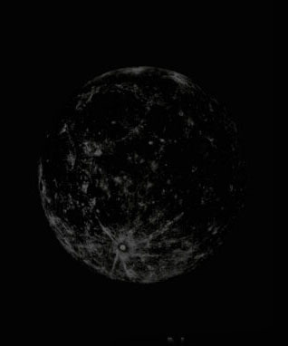

LAS FASES DE LA LUNA
La luna esta en constante cambio. Que no evolución, ni retroceso.
No es un hecho histórico, tampoco la degradación o el avance de nada en concreto.
Simplemente un bucle casi infinito de eso, cambios que a día de hoy no sabemos cuando empezaron ni cuando terminarán.

Las fases del la luna siguiendo el orden de estas imágenes son: